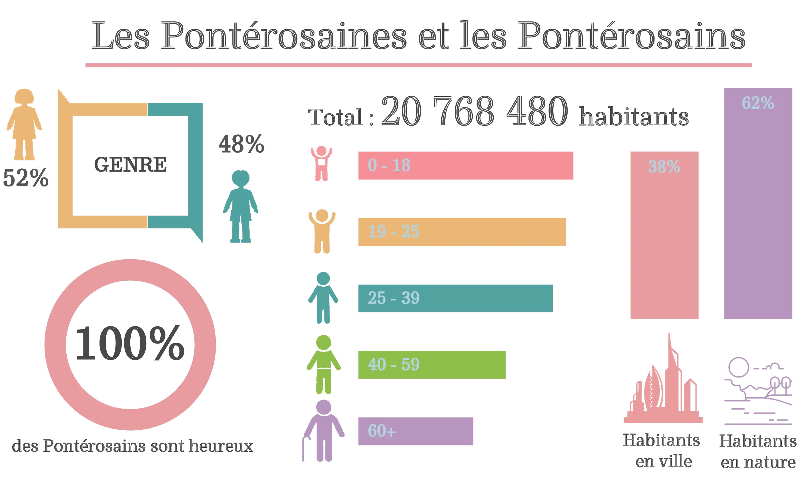
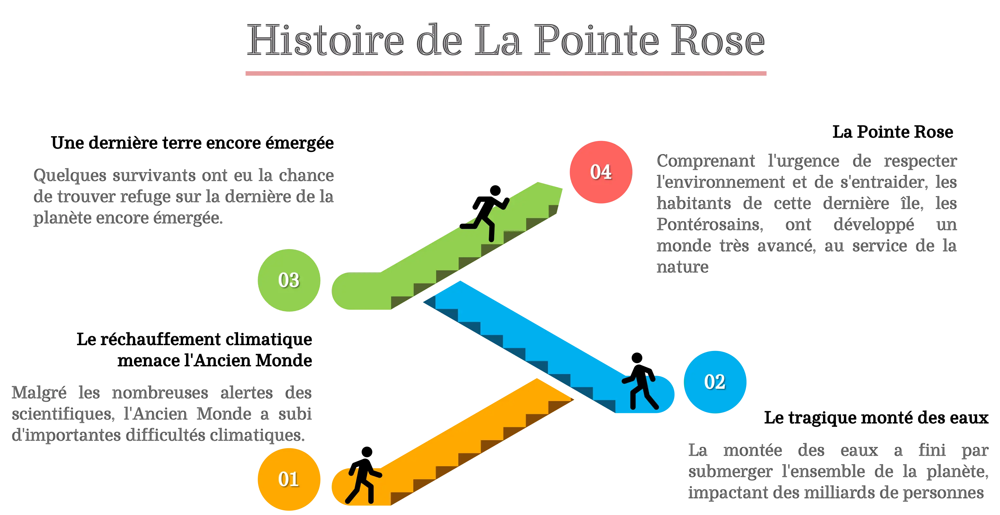
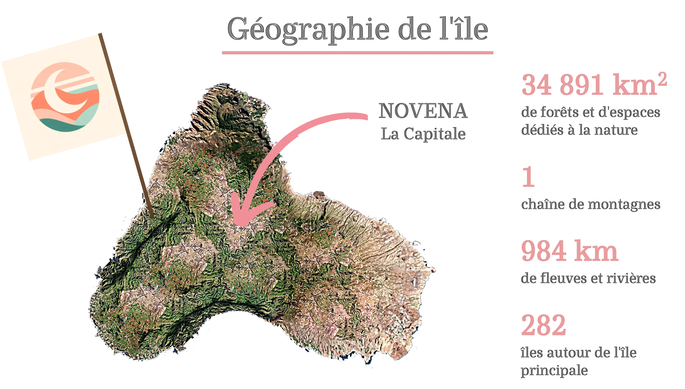
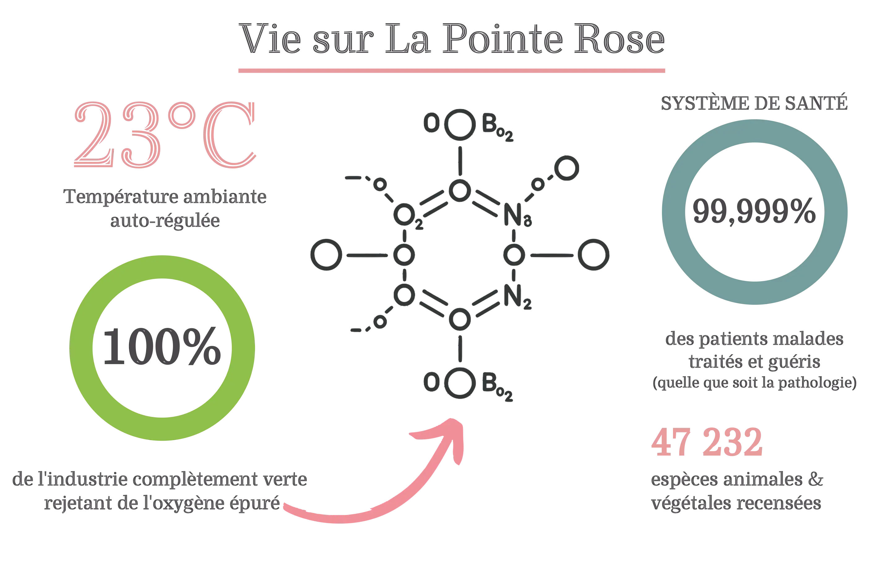
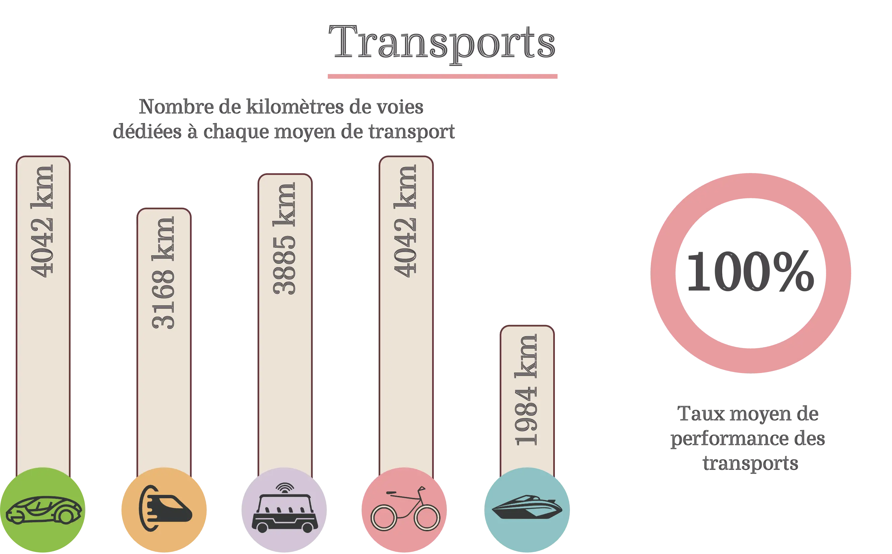
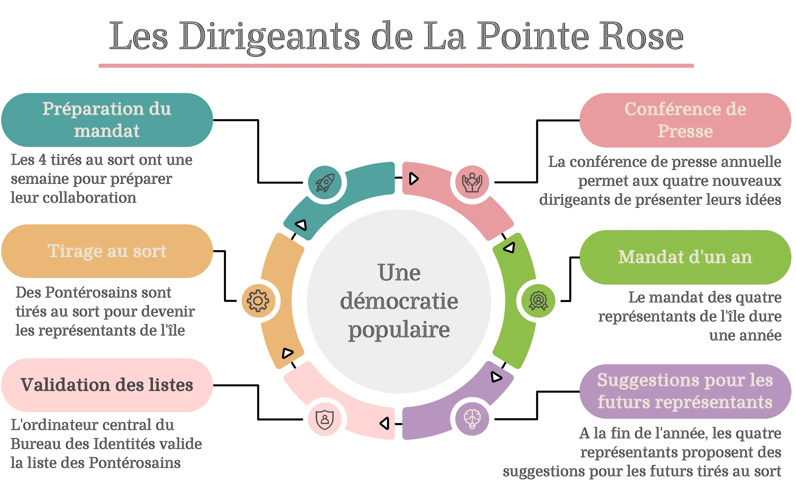
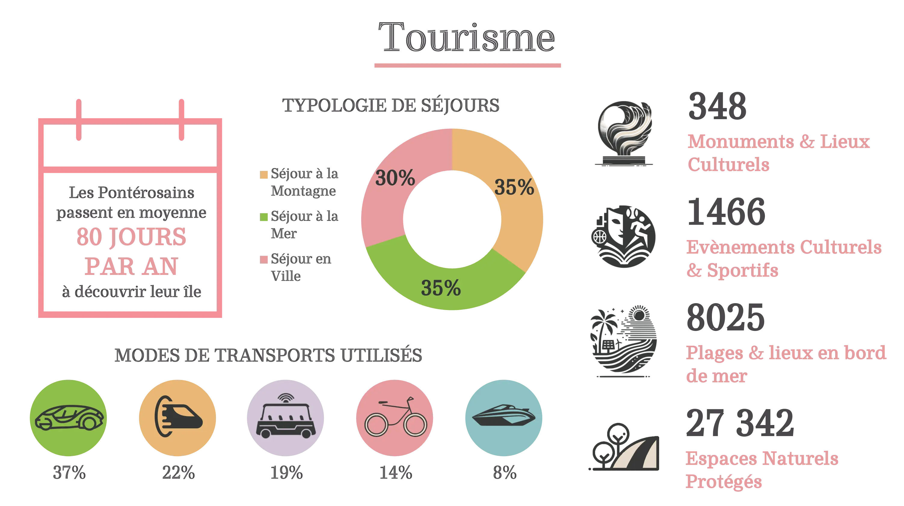

L'univers du film
La montée des eaux a englouti la planète.
Il ne restait plus aucun espoir… sauf une île.

L'île
Bien que la tragique montée des eaux ait fait de La Pointe Rose la dernière terre émergée de la planète, un peuple y vit paisiblement, libre et sans pensées négatives.
Afin de protéger et restaurer leur ultime écosystème, les Pontérosains se sont unis pour développer des technologies respectueuses de l'environnement — la symbiose entre l'être humain, la technologie et la nature, dans un monde vertueux et apaisant.







Faire défiler pour explorer l'île →
L'histoire de Tana
Tana, la trentaine, est journaliste. Appréciée et reconnue de tous, elle savoure son quotidien sur La Pointe Rose.
Un matin, Tana trouve un journal dans la rue. Ce fait, a priori anodin, la fait pourtant basculer dans un questionnement dérangeant. Les sujets des articles sont troublants et certains mots employés, tels que « plastique », « violence » ou encore « guerre », lui sont parfaitement inconnus.
Avec une inquiétude sourde, elle ressent intuitivement que l'harmonie qui règne sur l'île n'est peut-être qu'une illusion. Elle doit comprendre. Elle n'est pas sûre. Elle doute même de vouloir vraiment savoir…
Le synopsis complet
De l'île refuge au plus troublant des secrets — l'histoire complète, racontée comme un récit.
Lire l'histoire →
Note d'intention
Ma mère n'avait pas 20 ans et se prédestinait à être réalisatrice de cinéma. L'ordinateur n'existait pas encore. Elle tenait un carnet manuscrit dans lequel elle notait des idées de films. Acceptée en école de cinéma, à son grand regret, la vie ne lui a pas permis de suivre cette formation dont elle rêvait tant.
En 2017, au détour d'une discussion, elle m'a fait lire ce carnet. L'une de ses premières idées m'a vraiment interpellé ! Il me fallait absolument continuer ce qu'elle-même n'avait pas pu mener à bien : réaliser un film sur la base de son idée.
La note d'intention complète
Quarante ans d'une idée restée secrète, et pourquoi le suspense s'est imposé pour la raconter.
Lire la note d'intention →Les coulisses du film
Le 19 juin 2026, le teaser était projeté au Cinéma Le Central, à Puteaux.
La soirée de projection
La présentation du projet, le teaser, l'échange avec le public et le making of — toute la soirée du Central en vidéo.
Revivre la soirée →Aller plus loin
Déposé le 10 septembre 2023 auprès de la Société des Auteurs et Compositeurs Dramatiques (SACD).
Télécharger → PDF — Le projet completLe film, son univers, la démarche des réalisateurs et l'état d'avancement — en un seul document.
Télécharger →